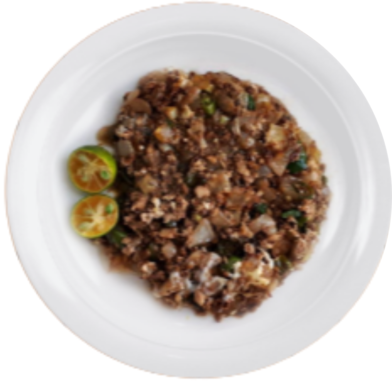

INGREDIENTS
- 1 lb. pig ears
- 1 1/2 lb pork belly
- 1 piece onion minced
- 3 tablespoons soy sauce
- 1/4 teaspoon ground black pepper
- 1 knob ginger minced (optional)
- 3 tablespoons chili flakes
- 1/2 teaspoon garlic powder
- 1 piece lemon or 3 to 5 pieces calamansi
- 1/2 lb chicken liver
- 1/4 cup butter or margarine
- 6 cups water
- 3 tablespoons mayonnaise
- 1/2 teaspoon salt
- 1 piece egg (optional)

Pork Sisig

INSTRUCTION
- Pour the water in a pan and bring to a boil. Add salt and pepper.
- Put-in the pig's ears and pork belly then simmer for 40 minutes to 1 hour (or until tender).
- Remove the boiled ingredients from the pot then drain excess water
- Grill the boiled pig ears and pork belly until done
- Chop the pig ears and pork belly into fine pieces 6. In a wide pan, melt the butter or margarine. Add the onions. Cook until onions are soft.
- Put-in the ginger and cook for 2 minutes
- Add the chicken liver. Crush the chicken liver while cooking it in the pan.
- Add the chopped pig ears and pork belly. Cook for 10 to 12 minutes
- Put-in the soy sauce, garlic powder, and chili. Mix well
- Add salt and pepper to taste
- Put-in the mayonnaise and mix with the other ingredients 13. Transfer to a serving plate. Serve hat. Share and Enjoy (add the lemon or calamansi before eating)